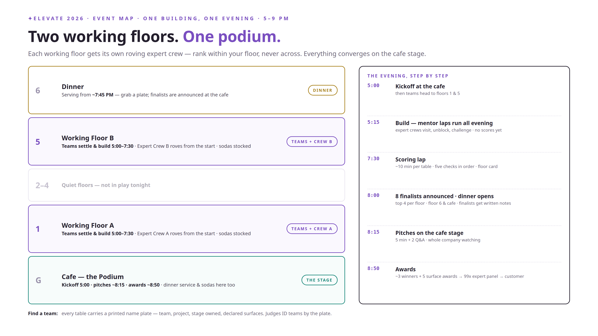
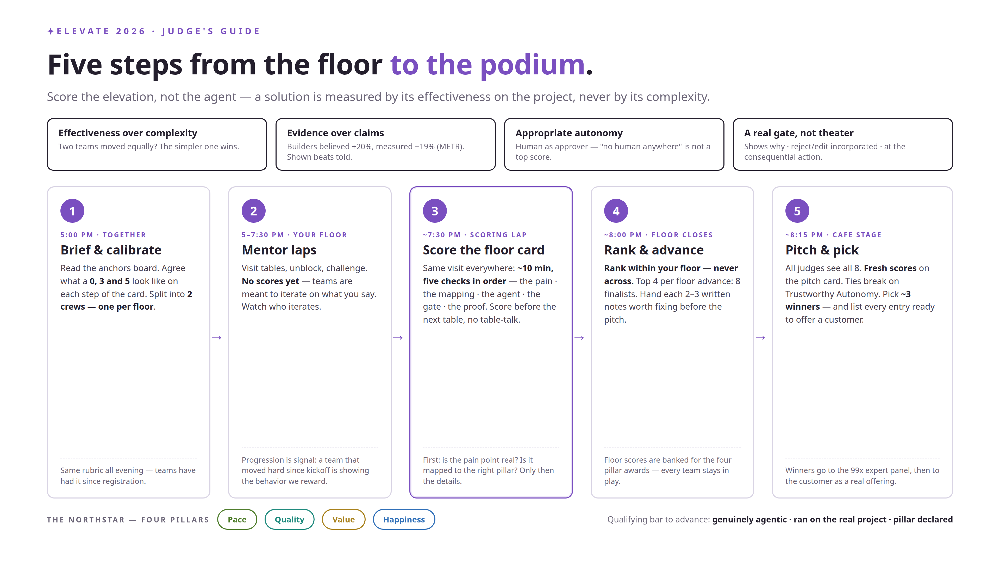
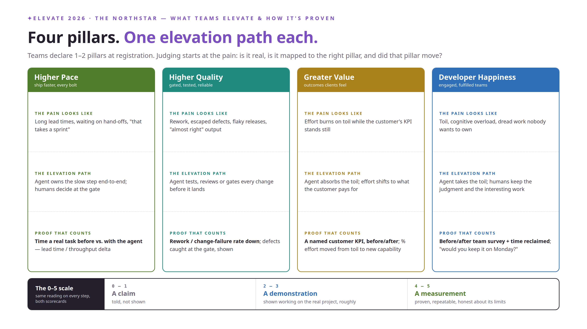
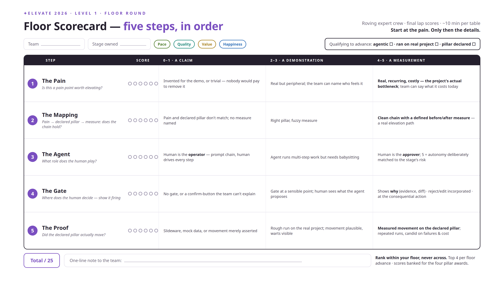
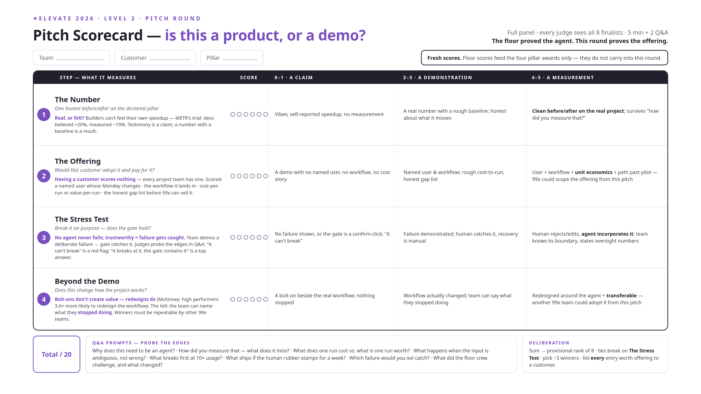
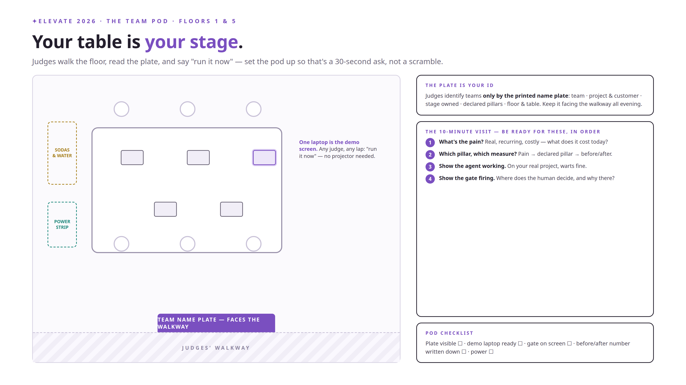
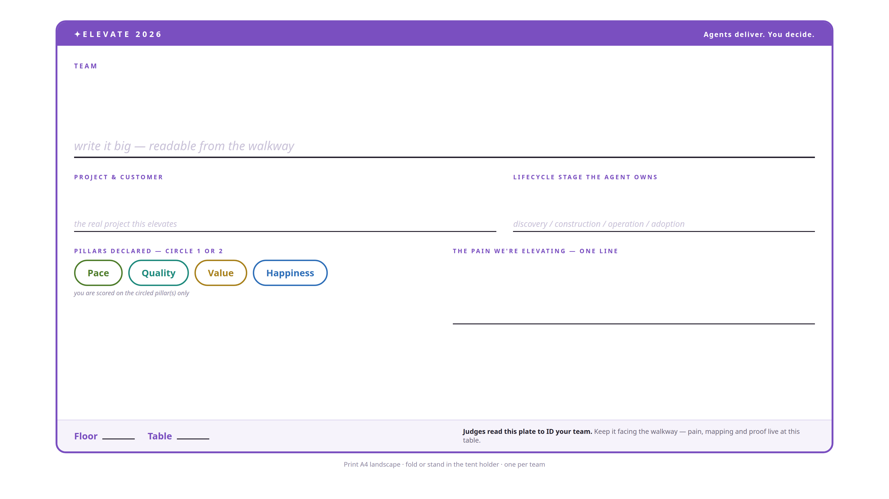

1One building, one evening
Teams build on floors 1 & 5, each floor with its own roving expert crew. Dinner on floor 6 & cafe. Everything converges on the cafe stage: 8 finalists pitch, ~3 winners — and the best entries go to the 99x expert panel, then to the customer as a real offering.
{kind=link}

2For judges — the guide and the anchors
Five steps from the floor to the podium, and the anchors board: the NorthStar's four pillars PaceQualityValueHappiness — what the pain looks like, the elevation path, and the proof that counts.
{kind=link}

{kind=link}

3The two scorecards
Level 1 (floor): five steps in order — the pain · the mapping · the agent · the gate · the proof (0–5 each, /25). Rank within your floor, never across; top 4 per floor advance. Level 2 (pitch): the number · the offering · the stress test · beyond the demo (/20), fresh scores.
{kind=link}

{kind=link}

4For teams — your table is your stage
Judges walk the floor, read the plate, and say "run it now." Set the pod up so that's a 30-second ask — and keep the name plate facing the walkway: it's how judges ID your team. Your metric, your baseline and the two-week runway live on the Team Guide tab.
{kind=link}

{kind=link}

5Full rubric & research grounding
Every scoring axis traces to published evidence — DORA 2025, the METR RCT, DX Core 4, Anthropic's agent frameworks, Gartner, McKinsey, MIT/NANDA, and the HackMIT judging research. The complete v01 rubric documents live in the repo:
Rubric overview · L1 floor scorecard · L2 pitch scorecard · Anchors · Event layout · Research grounding · v1 improvements log
🎯One team, one metric
The judges score the elevation, not the agent — and an elevation is a number that moved. A number can only move against a baseline taken before the agent touched anything. That's what the two weeks between ramp-up and event day are for: they are your measurement window, not just build time.
Your metric belongs to the pillar you declared PaceQualityValueHappiness — the menu below gives you proven, modern metric families for each. DORA is the backbone, but anything honestly measurable counts: DX Core 4, SPACE, DevEx, customer KPIs, AI-resolution metrics — sources at the end of this tab.
🛫The two-week runway
Same calendar as the event — seen from your side of the table.
Leads briefing — leave with a candidate metric
You declare your 1–2 pillars. Before you leave the room, know which metric you'd measure — the menu below is your shortlist.
Ramp-up 1 — metric locked
Metric and direction declared. Start the baseline the same day — measure the pain as it is today, before any agent exists.
Baseline week — collect the "before" number
On the real project: time 3–6 real runs of the slow task, pull last month's tickets or PRs, run the 3-question team pulse. Write the number down with the date and the method.
Drive week — build agentically, measure the same way
The agent goes to work on the metric. Measure with exactly the same method as the baseline — a delta measured two different ways is not a delta.
Event day — both numbers at the table
Baseline · after (measured, or honestly projected — see below) · one sentence on how you measured. That's the fifth check on the floor scorecard, ready before the judge asks.
📊No customer deployment? Projected is fine — no metric is not
Two weeks is short. Some teams won't get the agent in front of a customer by 7 Aug — that costs you nothing if your metric thinking is complete. The floor scorecard's universal scale is claim → demonstration → measurement; here's how your proof lands on it:
| Proof level | What it looks like at the table | Where it lands |
|---|---|---|
| Measured | Baseline + after-number, same method, on the real project. "Release task: 4.5 h manual → 40 min with the agent, timed over 6 runs." | top of the scale |
| Projected | Honest baseline + a working pilot shown live + the projection math. "First-response baseline 4.1 h; the agent drafts in 6 min — projected ~70% cut, here's the pilot." | demonstration — strong |
| Claimed | No baseline, no number, adjectives only. "It makes us much faster." | where teams lose |
The rule in one line: the metric and the baseline are mandatory; the after-number may be measured or projected — but a projection without a shown pilot and visible math is just a claim wearing a suit.
🪧At your table on the night
The name plate carries your declared pillars — put the metric, direction and baseline right under them. Have ready: the before number · the after or projected number · one sentence on the method · at most one chart. When a judge says "run it now," the metric story should take 30 seconds and the demo the rest.
📚Where the metrics come from
Every family on the menu traces to a published framework — the same evidence base as the rubric's research grounding.
- DORA — State of AI-assisted Software Development 2025 · throughput vs. stability, "AI is an amplifier" · dora.dev/dora-report-2025
- DORA four keys + rework rate · lead time, deploy frequency, CFR, recovery time · dora.dev/guides/dora-metrics-four-keys
- DORA AI Capabilities Model · the 7 capabilities that amplify AI benefit · dora.dev/ai/capabilities-model
- DX Core 4 · speed · effectiveness · quality · impact — unifies DORA, SPACE & DevEx · getdx.com/dx-core-4
- SPACE framework · satisfaction, performance, activity, communication, efficiency · ACM Queue — The SPACE of Developer Productivity
- DevEx framework · feedback loops · cognitive load · flow state · ACM Queue — DevEx: What Actually Drives Productivity
- DX AI Measurement Framework · utilization → impact → ROI of AI-assisted engineering · getdx.com — AI measurement framework
- Google HEART · happiness, engagement, adoption, retention, task success — for product/Value metrics · research.google — HEART (CHI 2010)
- METR RCT 2025 · why perceived speed-up ≠ measured speed-up (+20% felt, −19% real) · metr.org — developer study
📅The runway to event day
Every milestone between now and Friday 7 August. On-site events happen at 99x · 65 Walukarama Road, Colombo.
Introductory email
The launch flyer goes out — "Elevate your project. Agents deliver. You decide."
Briefing for team leads
The format and the evening's flow, the NorthStar pillars teams can elevate, how the two-level judging works, and what to prepare before ramp-up.
Ramp-up Session 1 — from idea to a running start
In three parts: the NorthStar & agentic maturity (Gartner's roadmap) · a live Xianix example · SWOT + the platform landscape. ~1.5 hours — details on the Sessions tab.
Ramp-up Session 2 — the Panel Discussion
One week out: a panel of engineering, delivery and senior leadership on the agentic projects and challenges we've already seen — details on the Sessions tab.
Judges' preparation week
Rubric walkthrough and calibration with every judge, and handover of the judging context pack — the guide, the anchors and both scorecards — so every crew walks the floor reading teams the same way.
ELEVATE 2026 — Event Day
Two working floors, expert crews roving from the start · 8 finalists pitch to the whole company at the cafe podium · ~3 winners + four pillar awards · dinner on floor 6 & cafe.
🎓The ramp-up sessions
Two sessions carry every team from idea to event-ready. Invitations below are shareable as-is — full-size cards for all four events (including the leads briefing and event day) live on the Marketing tab.
Ramp-up Session 1 — from idea to a running start
Fri 24 Jul · ~1.5h · time & venue TBC- 1/3 · The NorthStar & agentic maturity — plug the four pillars, then locate each project on Gartner's agentic-AI maturity roadmap (five levels: task-specific assistants → single agents with human gates → orchestrated multi-agent systems → largely autonomous operations). The takeaway: maturity is matched autonomy, not an autonomy race — Gartner predicts 40%+ of agentic projects canceled by 2027 for unclear value, exactly what our rubric scores against.
- 2/3 · Xianix, live — a worked example on xianix.ai, 99x's own agent platform: FDE-style pods of AI agents + human engineers. "AI agents do the work. Humans own the outcome" — the same thesis as our tagline. Built on Claude Code plugins, open, no vendor lock-in.
- 3/3 · SWOT + the platform landscape — each team SWOTs its agentic play, with a map of what's popular beyond Xianix as of today: managed platforms — Microsoft Copilot Studio, AWS Bedrock AgentCore, Google Vertex AI Agent Builder, OpenAI's agent platform, Salesforce Agentforce; frameworks & SDKs — LangGraph, Claude Agent SDK / Claude Code (what Xianix builds on), CrewAI, Microsoft Agent Framework, AutoGen, LlamaIndex Workflows, Pydantic AI. All of it is wave 5 of the "5 waves of AI tooling" — platforms for custom agent workforces.

Ramp-up Session 2 — the Panel Discussion
Fri 31 Jul · time & venue TBCOne week out. The panel represents three seats — and the conversation is the projects and challenges we have already seen, so teams leave inspired and with their open questions answered.
- Engineering — people who have shipped agentic solutions on real projects
- Delivery — delivery leaders who run the projects teams will elevate
- Senior leadership — the strategic view
- Format — walk through what worked and what broke · bring your hardest questions

👥Team compositionDraft 1 · 16 Jul
How 61 project rows (254 people) become the teams on the floor. Person-level rosters stay internal — this draft shows teams and pool sizes.
The AI bench — 26 people
Set aside from competition; they rove as the expert crews (one per floor, sub-split into pairs for the scoring lap) and run mentor laps all evening.
The participating teams — all 29
One list, one column tells you if the team is a project standing alone (4+ members) or a domain combination of smaller projects. Every team fields 3 builders. BUS Research joins the BUS pool; Solwr OMS-Retail joins the Solwr OMS pool. Each domain team picks one member project as its real target on day one ("ran on the real project").
| # | Team | Type | Combined from | Pool |
|---|---|---|---|---|
| 1 | Compello Process | Standalone | — | 23 |
| 2 | Adra Balancer | Standalone | — | 15 |
| 3 | NRC | Standalone | — | 14 |
| 4 | BUS | Standalone | — (+ BUS Research) | 14 |
| 5 | Adra Task Manager | Standalone | — | 10 |
| 6 | Amili Send | Standalone | — | 9 |
| 7 | Hatteland | Standalone | — | 9 |
| 8 | Adra Platform | Standalone | — | 9 |
| 9 | Adra Matcher | Standalone | — | 9 |
| 10 | Parkly | Standalone | — | 8 |
| 11 | SuperOffice QA | Standalone | — | 8 |
| 12 | SuperOffice Dev | Standalone | — | 7 |
| 13 | UpNorway | Standalone | — | 7 |
| 14 | Raintree Inc. | Standalone | — | 7 |
| 15 | Solwr OMS | Standalone | — (+ OMS-Retail) | 7 |
| 16 | CarCare | Standalone | — | 6 |
| 17 | Amili EDI | Standalone | — | 4 |
| 18 | Adra Journal Entry | Standalone | — | 4 |
| 19 | My1min | Standalone | — | 4 |
| 20 | BagID | Standalone | — | 4 |
| 21 | Amili Collections & Payments | Domain combined | Amili ARM · Pay · AutoCollect | 6 |
| 22 | Amili Customer Experience | Domain combined | Amili MyPage · Customer Portal | 5 |
| 23 | Finance & Accounting | Domain combined | Cantor · Kimaa · Flowyser | 5 |
| 24 | Data Platforms | Domain combined | Arktika · Amili Data Platform · Gture-Ditio | 5 |
| 25 | Society & Welfare | Domain combined | Friskus · SosialT · No Isolation · VardaCare · Gov Digitalization | 8 |
| 26 | Built Environment | Domain combined | Boligmappa-Tilde · AreaSim | 5 |
| 27 | Incrementi | Domain combined | Envo · Sebastian AS | 4 |
| 28 | Products & IoT | Domain combined | Plaato · Grunt · Norwegian SubSea · Kahoot | 6 |
| 29 | Enablement | Domain combined | BA · UX · QA Development · Internal Projects | 6 |
📣Marketing material
Everything shareable in one place — the launch flyer, the four invitation cards and the official logo set. Web-sized previews below; print-quality originals are linked under each card (from marketing/ in the repo).

{kind=link}

{kind=link}
{kind=link}
{kind=link}

{kind=link}
{kind=link}
{kind=link}
{kind=link}
{kind=link}

{kind=link}
🎭Backdrops
Three stage backdrops — 7680×4320 (16:9). Backdrops are viewed from metres away, so this one file prints crisp at 3 m wide (~65 dpi) and holds fine up to ~6 m (~32 dpi). Tell the printer: scale proportionally, 16:9 source, standard bleed — key content sits in the center 80%. Non-16:9 frame? Send the dimensions and we re-compose. Full guidance: backdrops.md.

{kind=link}

{kind=link}

{kind=link}